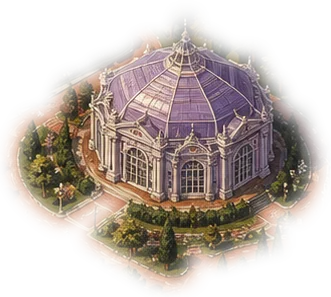
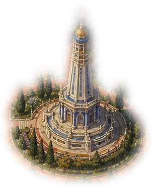
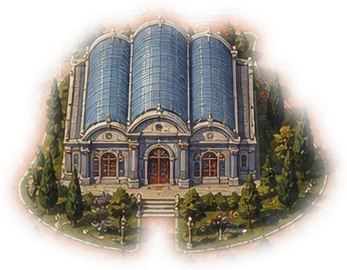
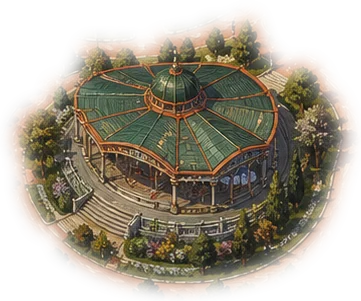
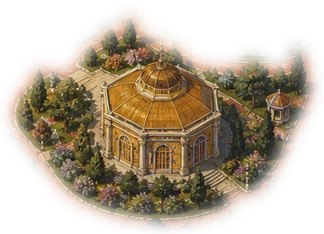
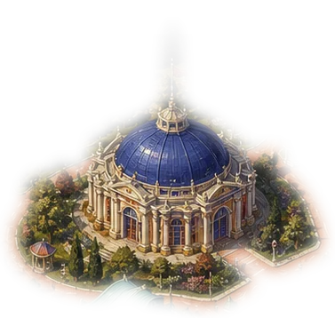
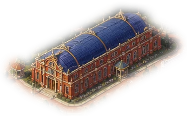
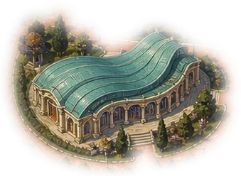

Colosseum · Crypto World’s Fair
uma competição global de startups







Setembro — Outubro 2026 · Superteam Brasil
Parte 1 · Por que Solana
Todo Ativo. Todo Mercado.
Uma rede.
Não é mais sobre qual chain tem mais desenvolvedores — é sobre qual chain move dinheiro de verdade. Receita de apps, volume de negociação e instituições financeiras globais já deram a resposta.
Parte 1 · Solana em números
Onde a Solana realmente lidera
Parte 1 · Velocidade, ao vivo
Enquanto você lê este slide, a rede está ficando mais rápida
Slot time: 400ms → 300ms (já ativo) → 250ms nesta semana → meta final de 200ms.
| Rede | Confirmação | Taxa típica |
|---|---|---|
| Solana | ~13s, caindo com o slot de 200ms | sub-centavo |
| Ethereum | ~13 min | ~$1,69 (volátil) |
| Base | ~13 min | ~$0,002–0,02 |
Parte 1 · Instituições de verdade
Por 175 anos conectamos pessoas, movimentando $150 bilhões por ano. A Solana era a escolha certa.
Devin McGranahan · CEO, Western Union
02
As regras mudaram
Eis o que muda pra competir na Crypto World’s Fair.
Parte 2 · Formato
4 semanas. Duas janelas por ano. Zero desculpa.
Parte 2 · Premiação
$0
| Categoria | Valor | Detalhe |
|---|---|---|
| Grande Vencedor | $30.000 | 1 projeto |
| Times Destaque | $300.000 | 20 projetos × $15.000 |
| Bem Público | $5.000 | 1 projeto |
| Universitário | $5.000 | 1 projeto |
| 8 trilhas de protocolo | $500.000 | ver próximo slide |
| Total | $840.000 | reconciliado com o anunciado |
Parte 2 · 8 trilhas de protocolo
Produto multi-chain? Concorra em mais de uma.
Parte 2 · Aceleradora · San Francisco
$0M
$250.000 por startup aceita (SAFE + token warrant, ou “Colosseum STAMP”). Só vencedores de hackathon entram — convite direto, aceitar é opcional.
Parte 2 · O que a submissão exige
Tratem a submissão como um pitch pro fundo, não como um formulário
Updates semanais (vídeo de 1 min) são recomendados, não obrigatórios — mas contam pontos com quem leva a sério.
Parte 2 · Como são avaliados
7 critérios oficiais
Parte 2 · Processo e prazos
Do envio ao resultado
03
Mas tem mais
Prêmios oficiais + trilhas de protocolo já somam $840.000 confirmados. E ainda não chegamos nos sidetracks.
Parte 3 · O que é o Superteam Earn
Um marketplace de bounties do ecossistema Solana
Não é exclusivo de hackathon: empresas e comunidades postam “listings” com prazo, prêmio e critério próprios, o ano inteiro.
superteam.fun/earn
Parte 3 · O hackathon dentro do hackathon
Sidetracks
Parte 3 · Isso já aconteceu antes
Não é teoria — é o padrão de toda edição
A trilha RPC Fast Infrastructure já volta nesta edição — o padrão se repete, e quem chega cedo tem vantagem.
Parte 3 · A metodologia
4 tiers
Parte 3 · Com o SEU projeto
Como catalogar, na prática
Parte 3 · Lembretes que mudam a estratégia